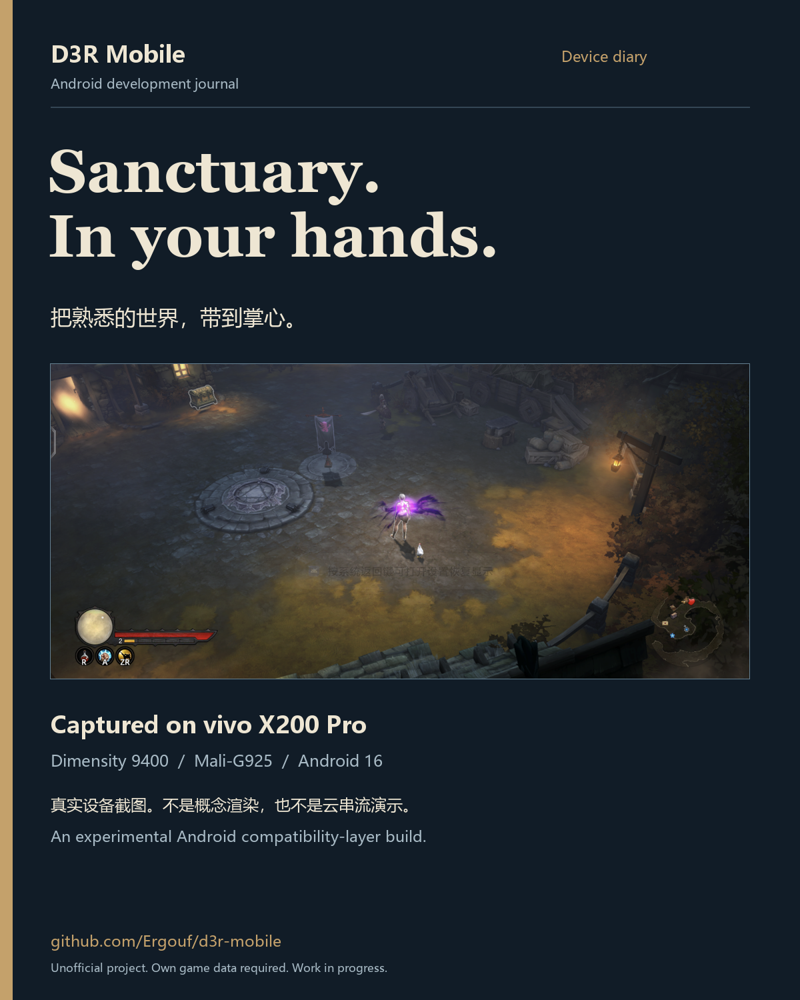
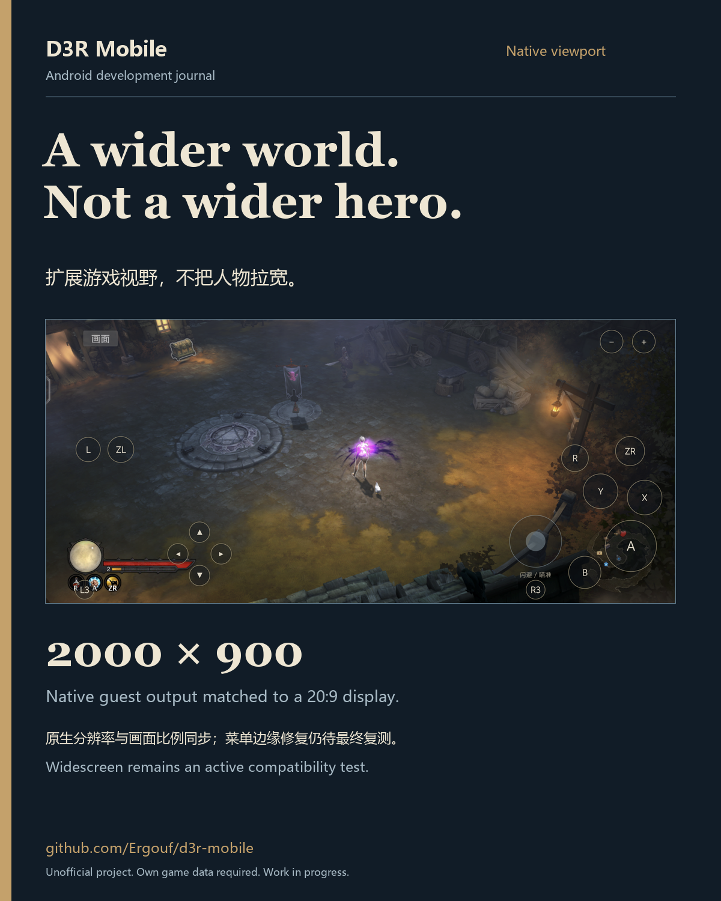
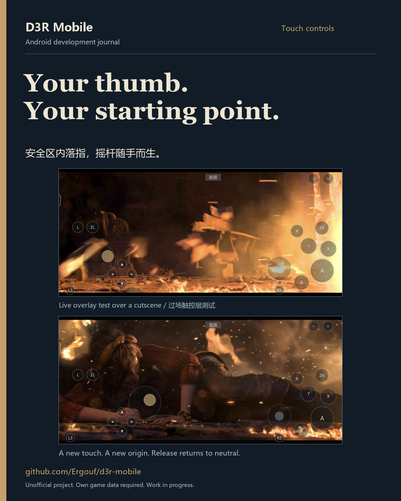
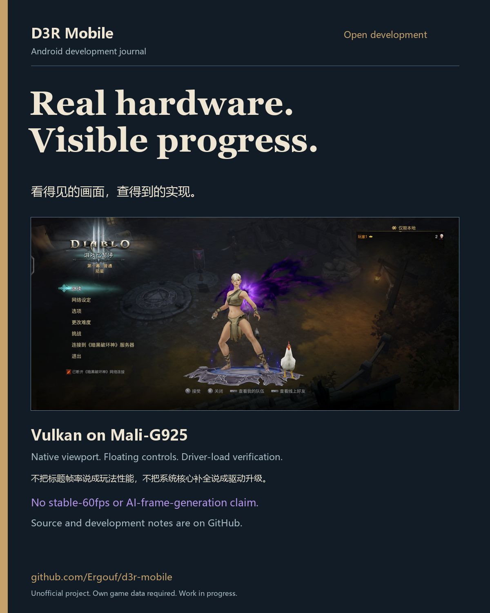

D3R Mobile — 实机开发图集
D3R Mobile · vivo X200 Pro · 2026-10-19
A real device.
A different frontier.
四张 1200×1500 图片，可直接用于 X 图集。画面来自实机 ADB 截图，保持原始宽高比、完整显示；没有合成游戏场景或伪造帧率。项目仍在开发中。
发布文案与注意事项 截图来源

实机运行 — 点击下载 PNG

原生宽屏 — 点击下载 PNG

浮动触控 — 点击下载 PNG

开放开发 — 点击下载 PNG